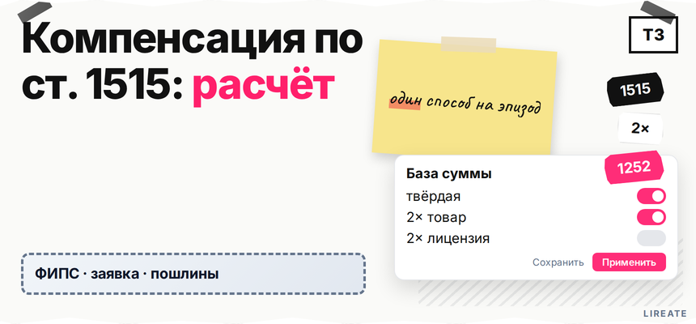
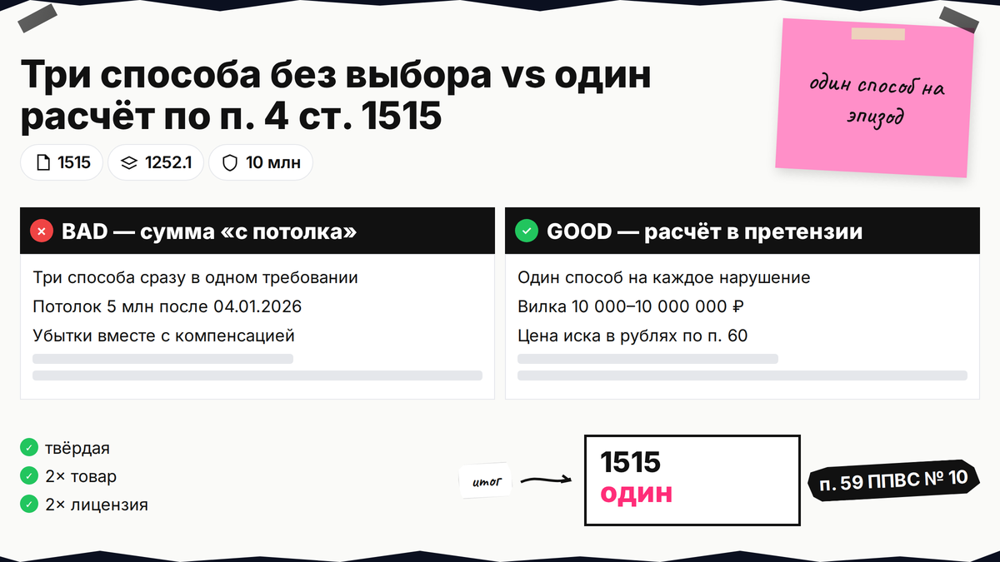
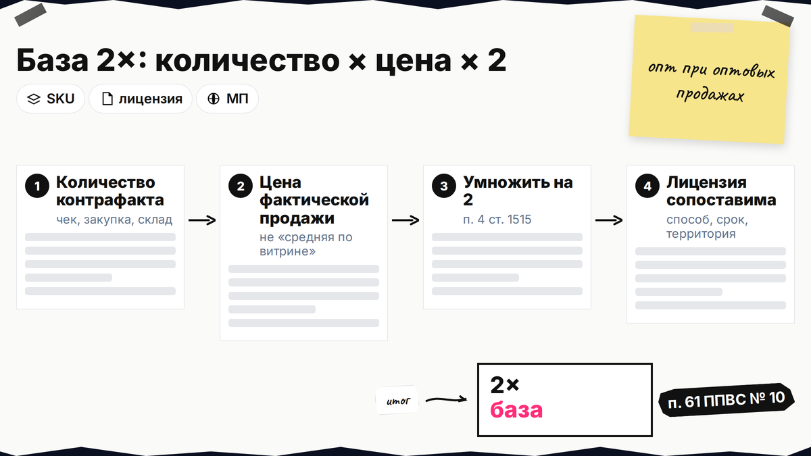
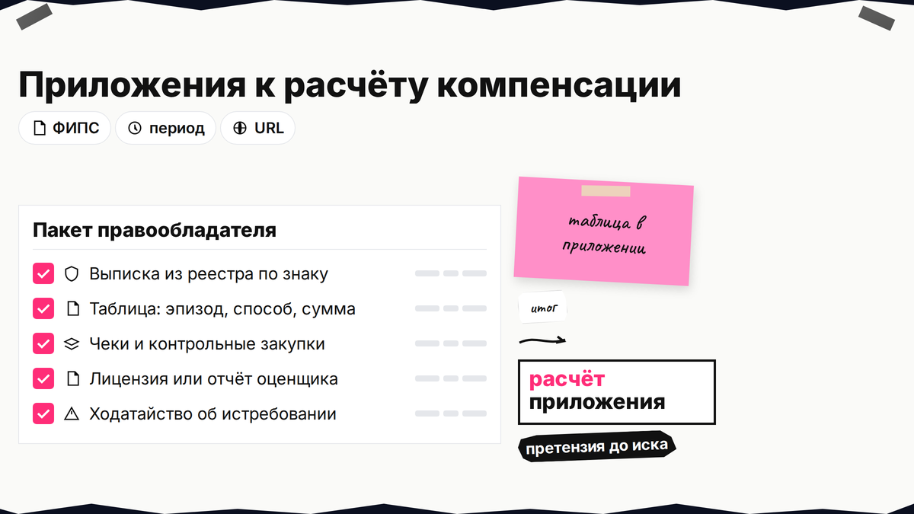

Компенсация за нарушение товарного знака в претензии часто завышена без базы - суд режет сумму. Это не убытки и не три способа сразу по п. 4 ст. 1515 ГК РФ. Вы выберете один способ на эпизод, посчитаете 2× или твёрдую вилку до 10 млн с 04.01.2026 и приложите таблицу к письму или иску, чтобы закрыть типовые дыры до суда. 23.11.2026; не юридическая консультация.

TL;DR / Быстрый инсайт: Компенсация - денежная мера по ст. 1515, не убытки: одновременно с ней убытки в том же требовании нельзя (п. 59 ППВС № 10). Истец выбирает один из трёх способов на каждое нарушение (п. 59). С 04.01.2026 твёрдая вилка 10 000-10 000 000 ₽ (ФЗ № 214-ФЗ); соразмерность - в ст. 1252.1. Расчёт и таблица идут в претензию к ЮЛ/ИП, затем иск через 30 дней (п. 5.1 ст. 1252). Фиксацию нарушения не повторяем - см. нарушают товарный знак: что делать правообладателю.
Товарный знак - зарегистрированное обозначение (логотип, слово, комбинация), которое отличает ваш товар на рынке. Контрафактные товары по п. 1 ст. 1515 - единицы с незаконным знаком на изделии или упаковке. Гайд для владельца свидетельства (ИП, бренд, производитель), который уже собрал доказательства использования. Полный маршрут сбора и претензии - в материале по защите знака; форму иска разбираем отдельно в гайде про иск (в публикации на Лирейт). Здесь только деньги по ст. 1515 и приложения к расчёту.

Делайте: для каждого эпизода нарушения зафиксируйте дату и проверьте, попадает ли он под правила с 04.01.2026 (ст. 1252.1, п. 1.1 ст. 1252). Затем сравните три варианта из п. 4 ст. 1515 с вашими данными и выберите один. Не делайте: требовать все три способа сразу или смешивать компенсацию с убытками в одной цене иска.
| Способ (п. 4 ст. 1515) | Когда уместен истцу | Риск, если база слабая |
|---|---|---|
| Твёрдая сумма (10 000-10 000 000 ₽ с 04.01.2026) | Нет надёжных данных о цене и объёме продаж | Суд снизит ниже заявленного при несоразмерности (п. 62 ППВС № 10) |
| 2× стоимость контрафактных товаров | Есть количество и цена продаж (опт, розница, МП с SKU) | Завышенный объём с витрины без закупки - риск отмены (практика по делу № А42-5880/2023) |
| 2× стоимость права использования | Есть сопоставимая лицензия или оценка за тот же способ и срок | "Полная" лицензия на все классы без пересчёта - пересмотр (ВС № 304-ЭС25-1782) |
Если выбранный способ неприменим, суд может перейти на твёрдую компенсацию (п. 3 ст. 1252.1) - готовьте запасной расчёт в той же вилке. Цену иска укажите в рублях даже при способе 2× (п. 60 ППВС № 10).
Схема перед отправкой претензии:
Эпизоды и даты → выбор способа по п. 4 ст. 1515 → расчёт в таблице → приложения → претензия по п. 5.1 ст. 1252 → 30 дней → иск

Делайте: для 2× контрафакт умножайте подтверждённое количество на цену продажи и на 2; при опте - оптовая цена (п. 61 ППВС № 10). Не делайте: брать продажи по всей категории МП без SKU под вашим знаком.
Для 2× лицензии сравните способ, срок и территорию (304-ЭС25-1782). Паушаль делите на период нарушения (С01-2389/2024). Нет своих договоров - рыночная лицензия или оценка; иначе твёрдая сумма.
Формулы:
2× контрафакт: N единиц × цена продажи × 2 = компенсация по эпизоду.
2× лицензия: стоимость сопоставимого права за период нарушения × 2.
Для твёрдой компенсации укажите 10 000-10 000 000 ₽ и свяжите с известностью и сроком (п. 61-62 ППВС № 10). К компенсации не применяют ст. 333 ГК (ВАС № 9189/13).
Делайте: опишите способ использования знака (п. 2 ст. 1484) и проверьте, сколько отдельных нарушений вы заявляете. С 04.01.2026 нарушение - незаконное использование одного объекта прав одним способом (п. 1.1 ст. 1252). Одна маркетинговая кампания или партия товара при единстве намерений часто считаются одним нарушением (п. 65 ППВС № 10). Новые товары после первого взыскания при том же способе - новый период для расчёта 2× (п. 66).
Проверьте: каждая строка таблицы эпизодов совпадает с датой в скринах или накладных. Не делайте: дробить искусственно одну рекламную акцию на десятки строк расчёта без разной даты и объёма. На одной упаковке несколько знаков - с 2026 года действуют особые правила объединения (п. 4 ст. 1252.1): не суммируйте полные минимумы по каждому знаку механически.
| Ситуация | Как считать эпизоды | Рекомендация в расчёте |
|---|---|---|
| Одна партия контрафакта, один канал | Один эпизод, один способ 2× | Одна строка: N × цена × 2 |
| Знак на упаковке и в домене | Разные способы по п. 2 ст. 1484 | Разные строки, разный способ 1515 |
| Продажи после первого суда по тому же знаку | Новый период (п. 66) | Новый расчёт, не "доначисление" к старому |

Расчёт без приложений выглядит как желаемая сумма. Соберите пакет под выбранный способ (п. 61 ППВС № 10).
Когда цифры в расчёте готовы, но знак ещё только планируете усилить охраной классов, сопровождение подачи можно передать специалистам через регистрацию товарного знака на Лирейт - до суда это снижает споры о перечне товаров.
Ответчик бьёт по базе цифр. Заложите контраргументы в таблице расчёта, не подменяя позицию истца гайдом для нарушителя.
Делайте: при МП привязывайте SKU; при п. 7 ст. 1252.1 докажите известность знака. Контраргументы ответчика - в гайде по ответу на претензию; снижение для нарушителя - отдельная статья, не ваша инструкция.
Не делайте: завышать объём (А42-5880/2023) или писать потолок 5 млн после 04.01.2026.
Итоговый вердикт: Для селлера с чеками и закупками чаще выигрывает 2× контрафакт; для дизайна на сайте без продаж - 2× лицензия или обоснованная твёрдая сумма. Один эпизод - один способ, одна строка цены иска.
Сверьте финальный чек-лист: один способ на эпизод; сумма в претензии совпадает с ценой иска; нет убытков в том же требовании; даты эпизодов разделены до/после реформы 04.01.2026; расчёт приложен. Дальше - претензия, ожидание 30 дней, иск. Если нужно закрыть охрану бренда до спора, оцените подачу заявки на товарный знак с перечнем классов под реальные SKU.
Материал проверен: эксперт Елена Ковалева (Главный эксперт по SEO/GEO).
Достоверность данных: нормы ГК РФ (ред. с 04.01.2026), ППВС № 10 и открытые судебные акты сверены на 23.11.2026; ключевая фраза "компенсация за нарушение товарного знака" отражает запрос правообладателя к расчёту по ст. 1515.
Нет. На одно нарушение выбирается один способ (п. 59 ППВС № 10). Для разных эпизодов допустимы разные способы в одном иске, если каждый эпизод описан отдельно (п. 60).
Убытки требуют доказывания реального ущерба и причинной связи; компенсация по ст. 1515 - альтернативная мера с фиксированными способами расчёта. Взыскать убытки и компенсацию одновременно по одному нарушению нельзя (п. 59 ППВС № 10).
До 10 000 000 ₽ включительно по п. 4 ст. 1515 в редакции ФЗ № 214-ФЗ (вступление 04.01.2026). Для эпизодов до этой даты применяют прежний потолок 5 000 000 ₽.
Цену фактических или офертных продаж конкретного SKU с вашим знаком, подтверждённую чеками, заказами или складскими данными (п. 61 ППВС № 10). Данные витрины без привязки к товару суды режут.
Нужна сопоставимая цена: рыночные договоры, отчёт оценщика, расчёт "в масштабе нарушения". Иначе твёрдая компенсация.
С 04.01.2026 смотрите п. 4 ст. 1252.1: нельзя просто сложить полные минимумы по каждому знаку на одном носителе. Опишите контрафактный носитель и права отдельно в таблице.
Да, между ЮЛ и ИП до иска о компенсации в арбитраже направляют претензию с требованием; без удовлетворения или ответа иск подают не ранее чем через 30 дней (п. 5.1 ст. 1252). Расчёт вкладывайте в претензию.